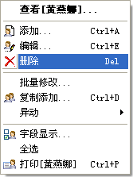
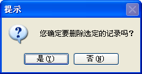

| 档案操作 - 删除 |
|
档案删除也是人事档案管理系统的一个基本功能，
它将删除您选定的档案信息。因为此操作不可逆，所以请小心使用，系统在进行此操作时亦有提示。在秋风人事档案管理系统中，你有四种方法进行员工档案的删除操作： 1．菜单的[档案管理]->[删除]。 2．工具栏里的[删除]按钮。 3．员工信息列表的右键菜单之[删除]菜单项。   4．你在浏览一个员工时，它上面的[删除]工具按钮可用。 以上几种方式您都可以使用，但更方便的是可以用快捷键操作：删除功能的快捷键是Delete。 几种操作方式之异同，前三种功能都是相同的，删除的是员工信息列表中的数据，在这里您可以用Ctrl+鼠标左键选取多条数据，或者执行右键菜单的[全选]功能选中全部数据，在这种情况下的删除操作，将删除您选择的全部数据。 而员工档案信息窗体中的删除操作，只能删除当前浏览的那条员工数据。 |